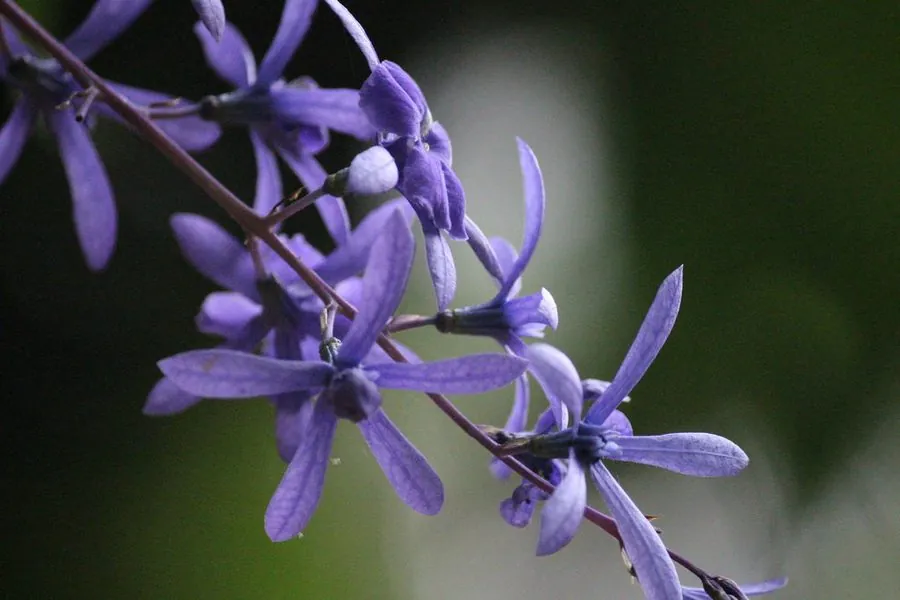

花卉与草本 · 植物界
蓝花藤 Petrea volubilis

马鞭草科蓝花藤属常绿藤本，花冠蓝紫色、萼片亦呈蓝紫，盛开时如紫色瀑布，是热带庭园中的明星藤本。
- 分类
- 门被子植物门纲木兰纲目唇形目科马鞭草科属蓝花藤属
- 栖息环境
- 中美洲热带林缘，喜温暖、阳光充足
- 地理分布
- 原产墨西哥、中美洲至委内瑞拉；中国华南及世界热带地区栽培
- 保护级别
- IUCN 暂无评估；栽培广泛，野生种群未受明显威胁
物种志
蓝花藤为常绿藤本，蔓长 5–10 米，茎木质化，表面粗糙。叶片对生，椭圆形至倒卵形，长 8–15 厘米，表面粗糙如砂纸，边缘全缘。总状花序腋生或顶生，长可达 30 厘米，花冠蓝紫色，5 裂，花萼亦呈蓝紫色并宿存，花后萼片仍保留观赏价值；果实为核果，包裹在宿存花萼中。
本种原产墨西哥、中美洲至委内瑞拉一带，喜温暖、阳光充足的环境，在中国华南常作棚架、墙垣与拱门绿化。它盛开时满架蓝紫，花萼比花冠更持久，远看像紫色的瀑布，因此英文称“女王的花环”。蓝花藤不耐寒，北方需盆栽温室越冬；生长迅速，需设坚固支架并定期修剪。其花蜜丰富，能吸引蜂类与蝴蝶。
形态与习性
- 蔓长5–10 米，茎木质化
- 花期4–6 月，花蓝紫色
- 花萼蓝紫色、宿存，花后仍可观赏
- 光照喜光，每天需充足直射光
- 水分喜湿润，忌积水
- 土壤肥沃、排水良好的壤土
- 主要用途棚架、墙垣与拱门绿化
趣味知识
- 蓝花藤最醒目的蓝紫色部分其实是宿存的花萼，花冠凋落后萼片仍能保持很久。
- 它的叶片表面粗糙如砂纸，因此英文名又叫 Sandpaper Vine。
- 蓝花藤盛开时像紫色的瀑布，被称为“女王的花环”。
- 它原产中美洲，19 世纪传入欧洲后成为温室中的观赏藤本。